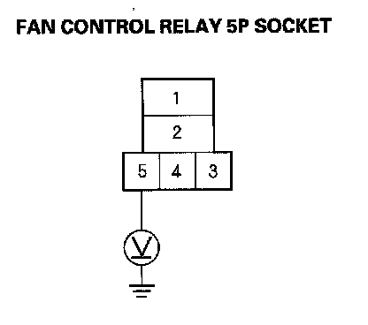
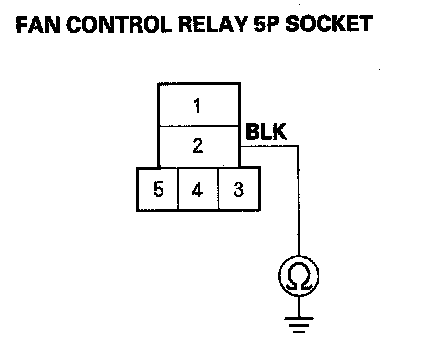
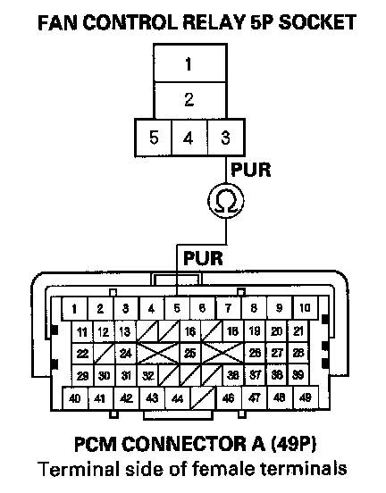

A/C Condenser Fan High Speed Circuit Troubleshooting
A/C Condenser Fan High Speed Circuit TroubleshootingNOTE:
- Do not use this troubleshooting procedure if the radiator fan and/or the A/C compressor is inoperative. Refer to the symptom troubleshooting index Symptom Related Diagnostic Procedures.
- Before doing any symptom troubleshooting, check for powertrain DTCs.
1. Remove the fan control relay from the relay block, and test it.
Is the relay OK?
YES - Go to step 2.
NO - Replace the fan control relay.
2. Turn the ignition switch ON (II).

3. Measure the voltage between the fan control relay 5P socket terminal No. 5 and body ground.
Is there battery voltage?
YES - Go to step 4.
NO - Replace the relay block.
4. Turn the ignition switch OFF.

5. Check for continuity between the fan control relay 5P socket terminal No. 2 and body ground.
Is there continuity?
YES - Go to step 6.
NO - Check for an open in the wire between the fan control relay and body ground. If the wire is OK, check for poor ground at G202.
6. Jump the SCS line with the HDS.
NOTE: This step must be done to protect the powertrain control module (PCM) from damage.
7. Disconnect PCM connector A (49P).

8. Check for continuity between the fan control relay 5P socket terminal No. 3 and PCM connector A (49P) terminal No. 5.
Is there continuity?
YES - Check for loose wires or poor connections at PCM connector A (49P) terminal No. 5. If the connections are good, substitute a known-good PCM, and recheck. If the symptom/indication goes away, replace the original PCM.
NO - Repair open in the wire between the fan control relay and the PCM.